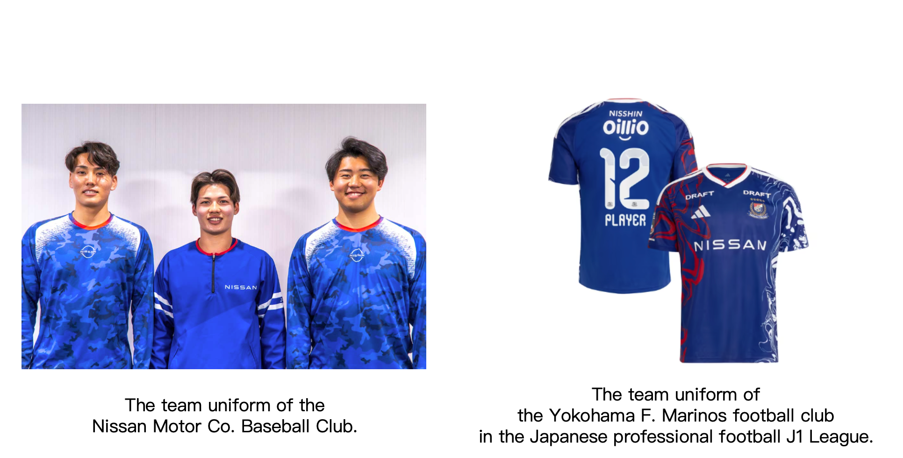

日产汽车本社硬式棒球部
- 起点
- 1959 年创立，以横须贺为活动基地。
- 组织属性
- 日产本社的社会人棒球队，由企业重启并运营。
- 日产角色
- 成立与运营主体；以球队连接员工、生产现场和当地社区。
- 赛事
- 都市对抗棒球大会、社会人棒球日本选手权等。
- 关键变化
- 2009 年休部；日产于 2023 年宣布恢复，2025 年重返赛场。
另有“日产汽车九州硬式棒球部”，恢复时间为 2024 年；本页只讲本社棒球部。来源 ↗
日产汽车本社硬式棒球部，与横滨 F·水手，都有日产的印记。前者是日产运营的企业棒球队；后者由日产足球部走向职业化，成为扎根横滨的职业俱乐部。认识它们，要把两段历史分别讲清。
看清两队与日产的关系 ↗独立研究展示 · 资料核对至 2026 年 10 月 12 日 · 非日产或俱乐部官方页面
同是日产历史中的蓝色队伍，棒球与足球分属不同赛事体系，后续的组织路径也不同。
另有“日产汽车九州硬式棒球部”，恢复时间为 2024 年；本页只讲本社棒球部。来源 ↗
切换球队可单独阅读；“全部”展示两段历史如何在相同年代平行发展。
棒球部的黑狮子旗与日本选手权，水手的 J1 冠军与亚洲决赛，都是可查证的荣耀；没有把一队的成绩算给另一队。
“美好事件”不只是一张奖杯清单。这里选的是官方资料中有具体人物、场景和社区连接的片段。
日产老队员桝本心回忆第二次都市对抗夺冠：员工、家人与伙伴从工作现场来到看台，那片声援让他至今难忘。这是企业队最独特的连接。
日产访谈 ↗日产老队员回忆，生产现场长期盼望球队恢复。2026 年的口号“がんばれ がんばれ NISSAN”则来自看台上自然响起的呐喊，重新把球员、员工和支持者连在一起。
老队员访谈 ↗ · 2026 球队口号 ↗俱乐部记录，2022 年周年纪念比赛有超过两万名球迷到场；同年球队赢下第五座 J1 冠军。日产在夺冠贺文中感谢球员、工作人员与支持者，回望从足球部起算的五十年。
30 周年专题 ↗ · 夺冠纪念页 ↗俱乐部教练走进幼儿园和小学，以足球课程分享运动的乐趣。这是横滨 F·水手自身的社区工作，不应误写成日产棒球部的活动。
俱乐部社区项目 ↗用户提供的对照图保留在这里，用于讨论两支队伍的视觉联系；图片中的英文说明不是两队关系的独立证据。

本页以日产和横滨 F·水手的一手资料为主，区分比赛成绩、组织关系、人物回忆与创意解读。核对日期：2026 年 10 月 12 日。
2026 年 6 月俱乐部公告只说 CFG 所持股份将转让给日产，没有给出完整持股结构或交割完成证明。因此这里只称日产为股东，不写“全资”。
用户截图的英文标题如此描述，但日产官方公布的比赛服胸前有 Bluebird 标志。仅凭截图无法核实三人所穿服装的具体用途，因此将图片视为视觉参考。
人物记忆以日产采访及俱乐部专题为准；访谈中的感受属于受访者回忆。棒球部社区活动的未来计划不写成已完成活动，俱乐部足球课程也不归属日产棒球部。